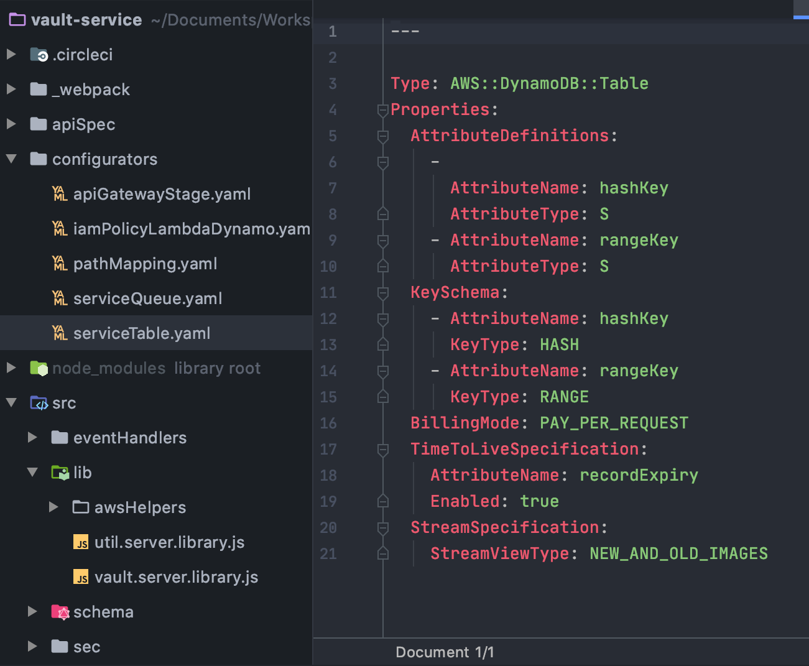
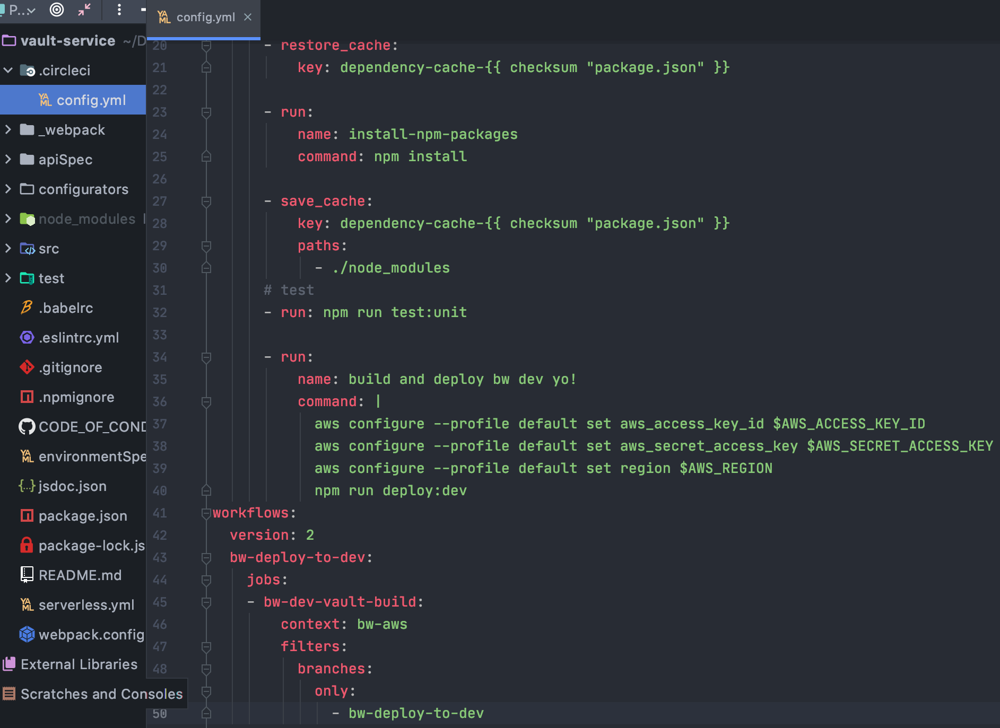

production ready MVP's
benefits of chassis driven serverless development
Slides: webconf2020.groklobster.io | slide source bit.ly/w3c-pres
serverless chassis: bit.ly/js-chassis | contact me: bruno@hypermedia.techabout me
- web infrastructure since late 90's
- payment processing since mid 2000's
- integration consultation since 2010
- cloud native architecture, eng and transformation since 2015
so the question is...why serverless?
first experience of serverless
3d render of person from two images
- each render takes 120 seconds
- each render costs $2.99AUD
- two giant clusters running at approximately 40% utilization
first experience of serverless
3d render of person from two images
- 10,000 renders in 55 seconds
- each render cost $0.001USD
- storage costs ≈ $0.50 per GB
hypermedia tech
pure serverless since 2016
implemented serverless solutions for
- international and national enterprise
- businesses with PCI compliance obligations
- support tools for cloud heavy businesses
- refactor growing startups
why use serverless?
mastery of serverless workoads give you:
- 2+ order of magnitude cost saving
- insanely low operational overhead
- improved security profile
whats the catch?
- extreme abstraction - needs a way to connect resources to functions
- emergent tools and patterns available
...and the solution.
- deployment chassis driven development
- architectural discipline
themes
- business and operational benefits and challenges
- chassis deep dive
- key architectural concerns
- technical demonstration
our example - bank générique
payment card vault use case
allow merchant to capture sensitive data directly from customer app session
our example - bank générique

our example - bank générique
focus

deploy the base services (orange)
themes
- business and operational benefits and challenges
- chassis deep dive
- key architectural concerns
- technical demonstration
benefits
- true pay as you go - orders of magnitude savings
- favourable shift in responsibility exposure
- low ops - development becomes operations
- extreme cadence
true pay as you go
true pay as you go

favourable shift in shared responsibility
increased abstraction means less management

low ops
- nothing but application code to manage
- automate builds from test enabled repository
- simple declarative security per application
- environments deployed from templates with guardrails
extreme cadence
- all this abstraction brings the dev team to the edge of production
challenges
- navigating enterprise DA's is challenging
- devOps and secOps will come love you
- enterprise doesnt like javascript
- open source all the way down.
themes
- business and operational benefits and challenges
- chassis deep dive
- key architectural concerns
- technical demonstration
deployment chasis deep dive
the deployment chassis answers the following questions
- how do we arrange code, config and resources?
- how do we apply developer tools?
- how do we enable integration and deployment workflows?
Arranging code, configuration and resources
- functions
- resources
- configuration
- deployment tools
functions
example: http event handler

resources
- infrastructure as code definitions
- represent platform software components
- granular policy based access
example: table defintion
configuration
- serverless.yml - the glue
- environment configuration
- populating environment configuration
serverless.yml - the glue
environment configuration
populating environment configuration
deployment tools
- packager: serverless + webpack or parcel
- script engine: npm
- deployment pipeline: circle
all js and yaml
serverless + webpack or parcel
script engine: npm
deployment pipeline
circle ci configuration
deployment pipeline
workflow
same approach available from most CI services
debug and test
- live replica per developer
- cloudfood: use platform tools
- unit testing and tracing
live replica production development
- accounts as code
- per user and per stage independent accounts
- policy guardrails, logging and monitoring applied
- compliance testing applied
cloudfood : use platform tools
- cloud provider monitoring tools
- dashbird
- advanced tracing - honeycomb.io
themes
- business and operational benefits and challenges
- chassis deep dive
- key architectural concerns
- technical demonstration
architecture driven engineering
cloud native application development
- thoughtful stakeholder engagement
- domain driven design
- REST(like) API's
- cloud native patterns
thoughtful stakeholder engagement
event storming for discovery
the MOST critical step
domain driven design
one chassis ≈ aggregate
REST(like) API's
cloud native patterns

cloud native patterns

- cqrs + event sourcing key cloud first paradigm
- chain events
- embrace eventual consistency
other use cases
- decompose monoliths
- web apps or web apis
- data or image processing
- any event oriented workflow
use case - decompose a faulty monolith
before
use case - decompose a faulty monolith
after
takeaways
- multiple orders of magnitude cost savings
- fast iteration cycles due to developers being adjacent to production
- improved security profile and reduced responsibility
- focus on domain design and engineering discipline
thank you!
any questions?
Slides: webconf2020.groklobster.io | slide source bit.ly/w3c-pres
serverless chassis: bit.ly/js-chassis | contact me: bruno@hypermedia.tech